Conventions¶
Coordinate frames¶
The diffractometer equation¶
We use the vector 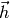 to describe a position in fractional reciprocal space in terms of the reciprocal lattice basis vectors 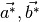 and 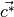.
(1)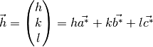
The special positions at which h, k and l are integer define the reciprocal lattice points for which (hkl) are the Miller indices.
The basic diffractometer equation relates a position to a position 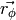 in Cartesian reciprocal space. This space is defined so that its axes coincide with the axes of the laboratory frame. The distinction is necessary because distances in reciprocal space are measured in units of 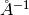. However, for convenience it is often acceptable to refer to either Cartesian reciprocal space or the real space laboratory frame as the “lab frame”, when the correct choice is clear by context. The diffractometer equation is
(2)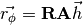
where is the goniostat rotation matrix and
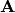 is the crystal setting matrix, while its inverse
 is referred to as the indexing matrix. The product
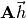 may be written as 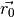, which is a
position in the
is referred to as the indexing matrix. The product
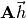 may be written as 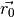, which is a
position in the  -axis frame, a Cartesian frame that coincides with
the laboratory frame at a rotation angle of 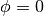. This makes clear
that the setting matrix does not change during the course of a rotation
experiment (notwithstanding small “misset” rotations — see
Orientation matrix.
-axis frame, a Cartesian frame that coincides with
the laboratory frame at a rotation angle of 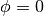. This makes clear
that the setting matrix does not change during the course of a rotation
experiment (notwithstanding small “misset” rotations — see
Orientation matrix.
For an experiment performed using the rotation method we use here
to refer to the angle about the actual axis of rotation, even when this is
effected by a differently labelled axis on the sample positioning equipment
(such as an axis of a multi-axis goniometer). Only in code
specifically dealing with sample positioning equipment might we need to redefine
the labels of axes. Outside of such modules, the rotation angle is
and the axis of rotation is 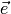, which together with the definition
of the laboratory frame determine the rotation matrix .
Orthogonalisation convention¶
Following [2] we may decompose the setting matrix into the product of two matrices, conventionally labelled and . We name the orientation matrix and the reciprocal space orthogonalisation matrix. These names are in common, but not universal use. In particular, some texts (for example [6] refer to the product (i.e. our setting matrix) as the “orientation matrix”.
Of these two matrices, is a pure rotation matrix and is dependent on the definition of the lab frame, whilst is not dependent on this definition. does depend however on a choice of orthogonalisation convention, which relates to a position in the crystal-fixed Cartesian system. The basis vectors of this orthogonal Cartesian frame are fixed to the reciprocal lattice via this convention.
There are infinitely many ways that may be decomposed into a
pair . The symbolic expression of
is simplified when the crystal-fixed Cartesian system is chosen
to be aligned with crystal real or reciprocal space axes. For example,
[2] use a frame in which the basis vector 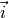 is parallel
to reciprocal lattice vector 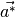, while 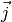 is chosen
to lie in the plane of and 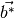. Unfortunately,
this convention is then disconnected from the standard real space
orthogonalisation convention, usually called the PDB convention [7].
This standard is essentially universal in crystallographic software for the
transformation of fractional crystallographic coordinates to positions in
orthogonal space, with units of 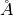. In particular, it is the convention
used in the cctbx [4]. The convention states that the
orthogonal coordinate  is determined from a fractional coordinate
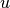 by
is determined from a fractional coordinate
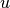 by
(3)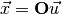
where the matrix  is the real space orthogonalisation matrix. This
matrix transforms to a crystal-fixed Cartesian frame that is defined such that
its basis vector is parallel to the real space lattice vector
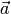, while lies in the 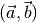
plane. The elements of this matrix made explicit in a compact form are
is the real space orthogonalisation matrix. This
matrix transforms to a crystal-fixed Cartesian frame that is defined such that
its basis vector is parallel to the real space lattice vector
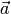, while lies in the 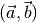
plane. The elements of this matrix made explicit in a compact form are
(4)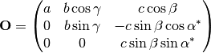
It is desirable to specify our reciprocal space orthogonalisation convention in terms of this real space orthogonalisation convention. [3] derives relationships between real and reciprocal space. Of particular interest from that text we have
(5)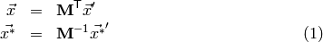
By analogy, equate 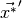 with and with 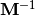. Also equate 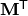 with and 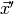 with 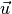. We then see that
(6)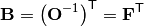
where is designated the real space fractionalisation
matrix. This is easily obtained in cctbx by a method of a
cctbx.uctbx.unit_cell object.
A symbolic expression for in terms of the real space unit cell parameters is given by [8] from which we derive simply:
(7)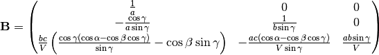
with 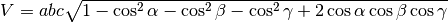
Orientation matrix¶
The matrix “corrects” for the orthogonalisation convention
implicit in the choice of . As the crystal-fixed Cartesian
system and the -axis frame are both orthonormal, Cartesian frames
with the same scale, it is clear that must be a pure rotation
matrix. Its elements are clearly dependent on the mutual orientation of these
frames.
It is usual to think of the orientation as a fixed property of the “sweep”. In practice the orientation is parameterised such that it becomes a function of time, to account for crystal slippage (the true degree of this is unknown but expected to be small; Mosflm uses crystal orientation parameters to account for inadequacies in other aspects of the experimental description). To reconcile these points, the current orientation may be expanded into a fixed, datum part and a variable time-dependent part that is parameterised. That gives
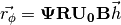
where is the combined rotation matrix for the misset expressed as three angles, 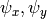 and 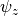 in the laboratory frame.
In Mosflm these angles are converted to their equivalents in the 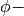 axis frame, where:
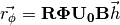
At this stage it is unclear which set of angles are the best choice for parameterisation of the crystal orientation.
The laboratory frame¶
An important design goal of the DIALS project is that all algorithms should be fully vectorial. By this we mean that it should be possible to change the reference frame arbitrarily and all calculations should work appropriately in the new frame.
Nevertheless, it is useful to adopt a particular standard frame of reference for meaningful comparison of results, communication between components of the software and for an agreed definition of what the laboratory consists of (incompatible definitions can be reasonably argued for, such as that it should be either fixed to the detector, or to the rotation axis and beam).
In the interests of standardisation, we choose to adopt the Image CIF (imgCIF) reference frame [1], [5].
Summary of coordinate frames¶
- gives a position in fractional reciprocal space, fixed to the crystal.
- 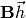 gives that position in the crystal-fixed Cartesian system (basis aligned to crystal axes by the orthogonalization convention)
- 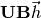 gives the
- 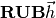 gives Cartesian reciprocal space (fixed wrt the laboratory)
- The diffraction geometry relates this to the direction of the scattering vector 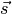 in the laboratory frame
- Projection along impacts an abstract sensor frame giving a 2D position of the reflection position on a sensor.
- This position is converted to the pixel position for the 2D position on an image in number of pixels (starting 0,0 at the origin).
References
| [1] | Bernstein, H. J. in Int. Tables Crystallogr. 199–205 (IUCr, 2006). |
| [2] | (1, 2) Busing, W. R. & Levy, H. A. Angle calculations for 3- and 4-circle X-ray and neutron diffractometers. Acta Crystallogr. 22, 457–464 (1967). |
| [3] | Giacovazzo, C. Fundamentals of Crystallography. (Oxofrd University Press, USA, 2002). |
| [4] | Grosse-Kunstleve, R. W., Sauter, N. K., Moriarty, N. W. & Adams, P. D. The Computational Crystallography Toolbox: crystallographic algorithms in a reusable software framework. J. Appl. Crystallogr. 35, 126–136 (2002). |
| [5] | Hammersley, A. P., Bernstein, H. J. & Westbrook, D. in Int. Tables Crystallogr. 444–458 (IUCr, 2006). |
| [6] | Paciorek, W. A., Meyer, M. & Chapuis, G. On the geometry of a modern imaging diffractometer. Acta Crystallogr. Sect. A Found. Crystallogr. 55, 543–557 (1999). |
| [7] | PDB. Atomic Coordinate and Bibliographic Entry Format Description. Brookhaven Natl. Lab. (1992). |
| [8] | Rupp, B. Coordinate system transformation. |